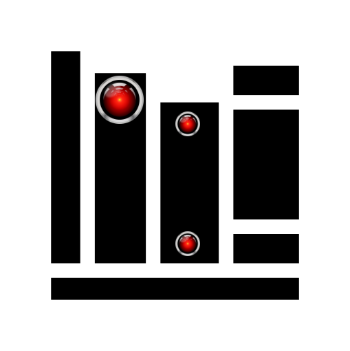
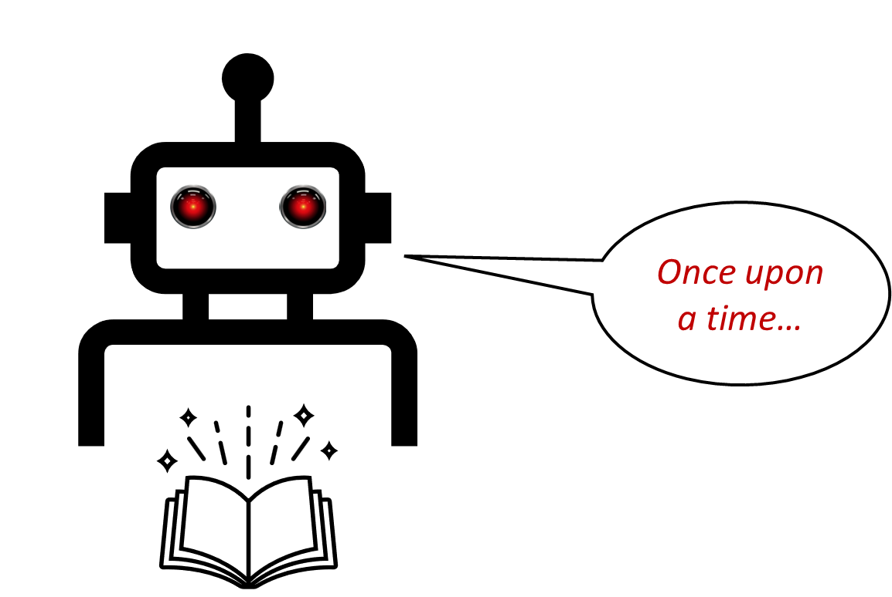
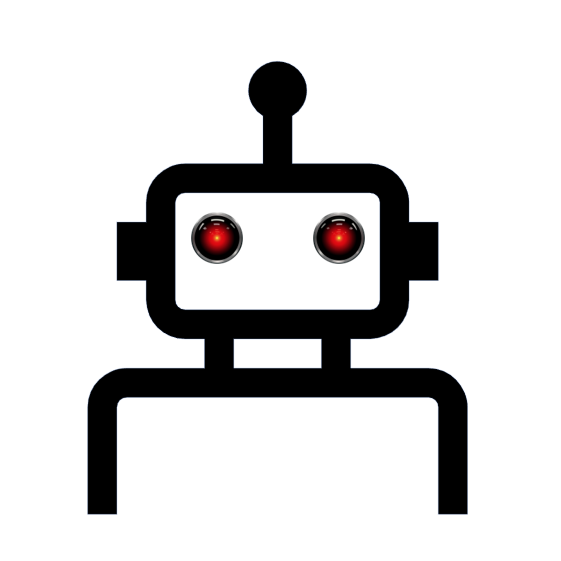
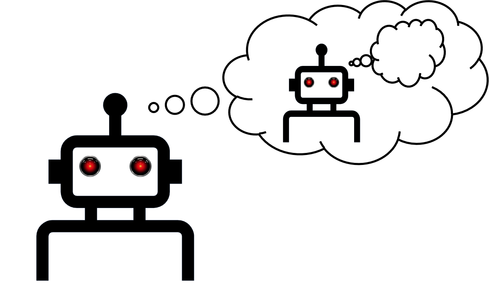
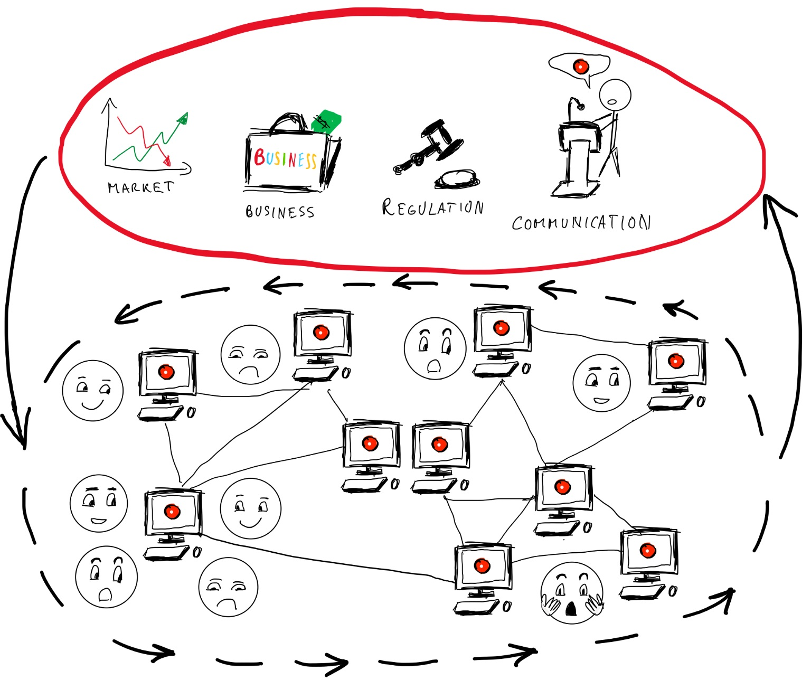
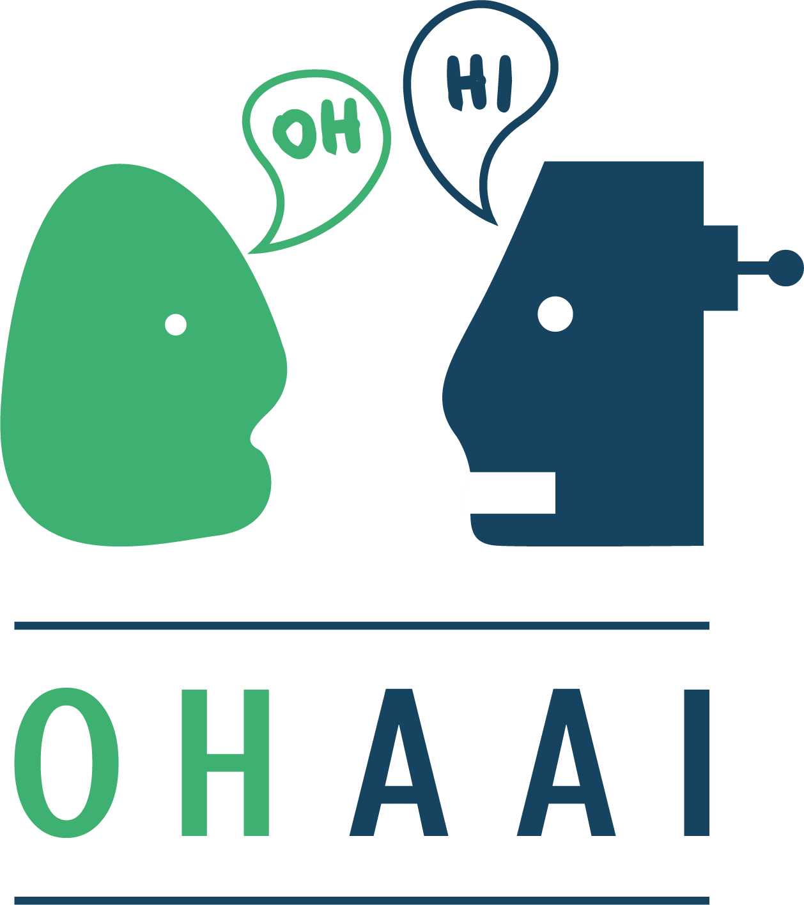

Welcome
I am an Associate Professor of AI for Defence and Security and a Royal Academy of Engineering UK Intelligence Community Research Fellow at the University of Lincoln, where I lead the research of the Centre for Defence and Security AI and the HIDE Lab, a hub for AI-based research on deception. I am also an Associate Researcher at Inria and a Faculty Affiliate at Ontario Tech (Trustworthy AI Lab).
Previously, I was a Proleptic Lecturer (Assistant Professor) at King’s College London. Before that, I was a 3iA Postdoctoral Research Fellow at Inria/3iA Côte d’Azur and a Postdoc in the HASP lab at King’s. My background includes a PhD in AI from King's, an MSc in Cognitive Science from Edinburgh, and a BA in Philosophy from West University of Timisoara.
Research Interests
I study reasoning and behaviour of intelligent agents—human or machine—in hybrid societies. My research spans complex multi-agent systems, agent-based modelling, and neurosymbolic architectures, with a focus on deceptive AI, deception modelling, and self-explainable agents using Theory of Mind.
 Selected Talks
Selected Talks
- 2026: The Evolution of Deception — Science Gallery, London
- 2023: Understanding Deception in Hybrid Societies — CSIRO Data61
- 2023: Arms Race in Theory-of-Mind — ACSOS
- 2023: Working Alongside Deceptive Machines — ICSPP DSEI
- 2023: Should My Agent Lie for Me? — AAMAS
- 2022: Creating Deceptive Machines — Monash Cybersecurity Seminar

Selected Papers- 2026: Aleph-IPOMDP: Mitigating Deception in a Cognitive Hierarchy with Off-Policy Counterfactual Anomaly Detection in JAIR
- 2025: Banal Deception and Human-AI Ecosystems in JAIR
- 2024: Reflective Artificial Intelligence in Minds & Machines
- 2024: Self-Governing Hybrid Societies and Deception in ACM TAAS
- 2024: The Triangles of Dishonesty: Modelling the Evolution of Lies, Bullshit, and Deception in Agent Societies in Proc. of AAMAS
- 2023: An Arms Race in Theory-of-Mind: Deception Drives the Eergence of Higher-level Theory-of-Mind in Agent Societies in Proc. of ACSOS
- 2023: Should My Agent Lie for Me? A Study on Attitudes of US-based Participants Towards Deceptive AI in Selected Future-of-work Scenarios in Proc. of AAMAS
- 2023: Deceptive AI & Society in IEEE Technology and Society Magazine
- 2022: Interoperable AI: Evolutionary Race Toward Sustainable Knowledge Sharing in IEEE Internet Computing
- 2021: The Evolution of Deception in Royal Society Open Science
- 2019: Modelling Deception Using Theory of Mind in Multi-Agent Systems in AI Communications
Research Projects

Enhancing deception analysis with storytelling AIDeception is becoming an increasingly complex socio-cognitive phenomenon that is difficult to detect and reason about. My research tackles the integration of techniques from AI and deception analysis to generate narratives about interactions in complex and adaptive multi-agent systems in order to help intelligence analysts perform inference to the best explanation. To do this, I have been awarded a £300,000 fellowship grant by the Royal Academy of Engineering through the UK IC Postdoctoral Research Fellowship scheme for the project entitled Enhancing deception analysis with storytelling AI. This project is the continuation of my PhD thesis in AI entitled Deception.

Deceptive AIAutonomous agents might develop or be endowed with the ability to deceive. Deceptive machines first appear, more or less, as subtle concepts in Turing's famous Imitation Game. In this game, their role is to trick humans into assigning them the property of intelligence (and perhaps even the property of being phenomenally conscious?). Events that revolve around fake news indicate that humans are more susceptible than ever to mental manipulation by powerful technological tools. My concern is that, given future advancements in AI, these tools may become fully autonomous. This threat made me think that there might be several reasons for which we might consider modelling such agents. Now, the big question that follows from this is "How do we model these artificial agents in a manner such that we increase our understanding of them, instead of increasing the risks they might pose?". With this question in mind, in my PhD thesis , I give the first full computational treatment to deception in AI. However, if you're not into reading PhD theses, you can have a look at my paper in IEEE Technology and Society to get a brief overview and history of the concept of deceptive AI
To anyone interested in delving deeper into this topic, I recommend having a look at some of the symposia and workshops on deceptive AI (some of which I have co-organised): the 1st International Workshop on Deceptive AI @ECAI2020 and the 2nd International Workshop on Deceptive AI @IJCAI2021 , the 2015 AAAI Fall Symposium on Deceptive and Counter-Deceptive Machines, and the 2017 Deceptive Machines Workshop @NeurIPS. Don't forget to check out the Deceptive AI Springer book containing the joint proceedings of the two International Workshops on Deceptive AI.

Reflective AI with Theory of MindReflection, done right, could allow machines to reason and model the consequences of their actions in complex environments and together with the ability of using Theory of Mind, it enables them to model and reason about other agents' minds in these environments. Some of the scientific literature on this topic shows that Theory of Mind could increase the performance of artificial agents, making them more efficient than artificial agents that lack this ability. This includes making them more effective at deceiving. However, modelling others agents' minds is a difficult task, given that it involves many factors of uncertainty such as the uncertainty of the communication channel, the uncertainty of reading other agents correctly, and the uncertainty of trust in other agents. I am very fascinated by the promise of social AI and I am highly engaged this research topic, especially in the modelling of how artificial agents can cause changes in the beliefs of other agents through communication and how they reflect on their own mental processes and selves. However, we must cautiously tread this path, as we could risk ending in an arms race in Theory of Mind between machines that deceive and machines that detect deception. Together with my colleagues, we have set up the ToM4AI initiative to organise a series of workshops and events in order to take this line of research questions into mainstream AI research. To anyone interested in the proceedings of the workshop, you can access them here:

Governing Knowledge-Sharing in Hybrid SocietiesI am also involved in research projects related to knowledge sharing and privacy in hybrid systems. We are now in the age of deceptive AI ecosystems where knowledge exchange has a significant role in how humans and machines adapt to each other. How do we ensure that hybrid societies, where humans and machines interact as agents will exchange knowledge in an honest, ethical, and sustainable manner? To begin to answer this question, we must understand not only the ethics of deceptive AI, but also how deception evolves in human-machine societies, and how societies govern themselves to become resilient in the face of deception. Moreover, we must also look at how properties that were initially considered technical, such as the interoperability of Web agents, are actually influenced by external evolutionary pressures of society such as financial incentives and businesses strategies at large. Subsequently, the evolution of human-machine relation might have ripple effects into the adoption of technology, putting various businesses at risk, such as agrirobotics. I am part of the Collective for Self-organizing Communities in Artificial and Living Systems (CoSOCiALS) that is dedicated to answer these ever-expanding problems. As part of CoSOCiALS, I have co-organised the 3rd and 4th International Workshops on Sustainability and Scalability of Self-Organisation (SaSSO).

Argumentation-driven Explainable AIHow do machines to explain and justify their reasoning and decision making? Argumentation in AI is seeing an increased interest due to its potential in shedding light onto issues like Explainable AI. Apart from actively doing research on how machines can generate meaningful arguments during social interactions (mostly dialogues), I have also worked together with my some of my PhD colleagues at King's to co-found the Online Handbook of Argumentation for AI. The purpose of this handbook is to provide an open access and curated anthology for the argumentation research community. OHAAI will act as a research hub to keep track of the latest and upcoming topics and applications of argumentation in AI. The handbook mainly aims to present argumentation research conducted by current PhD students and early-career researchers in all areas where argumentation can be applied to AI. The handbook’s ulterior goal is to encourage collaboration and knowledge discovery between members of the argumentation community. As of 2022, OHAAI has become part of the COMMA conference. Students who submit extended abstracts to OHAAI have the opportunity to present their work at the COMMA Summer School on Argumentation.